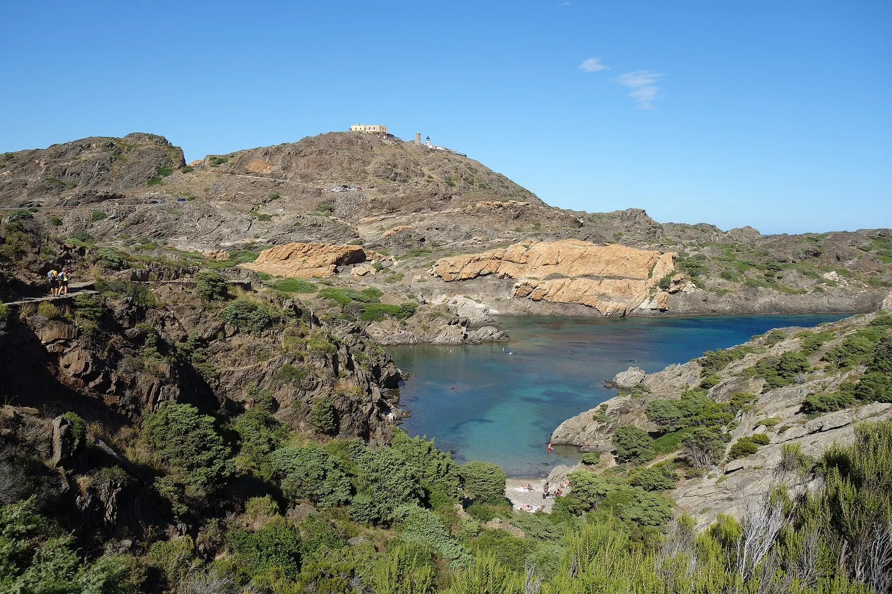

Cap de Creus
Costa Brava, Catalogne, Espagne · plongée, snorkeling, kayak

Pointe la plus orientale de la péninsule Ibérique, parc naturel terrestre et marin. Criques rocheuses, tombants et herbiers s’explorent en kayak ou en plongée depuis Cadaqués et El Port de la Selva.
- Lieu
- Costa Brava, Catalogne, Espagne
- Niveau
- Intermédiaire
- Activités
- plongée, snorkeling, kayak
- Type d'eau
- Mer / océan
- Coordonnées
- 42.32, 3.32 (position approximative du secteur)
Dangers à connaître
- Tramontane violente et soudaine, mer très agitée autour du cap.
- Parc naturel : zones de réserve où la plongée est interdite ou soumise à autorisation.
Le conseil d'Ocean Buddy
La tramontane peut souffler très fort : consulte la météo et renonce au kayak dès qu’elle se lève.
Ouvrir dans Ocean Buddy Télécharger sur l'App Store
Source : Fiche Ocean Buddy · septembre 2026 · à vérifier localement.